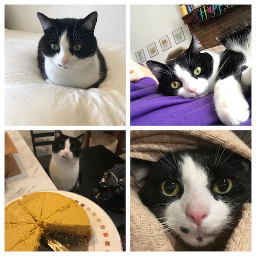

A Lifelong Friendship is Born
In the spring of 2016, I was introduced to a very handsome young kitten named Simon.
At the time he was being fostered by my friend Katelyn, but it didn't take long for us to fall in love (he sat on my lap once) and for me to take him home (not his choice.)

So I can't Just Feed him Every Time he Meows?
In the early days, it was simple. He wants food? He gets food. Measuring cups? No need for those!
He gained some weight. We learned portion control.

Trials & Tribulations
Cats do not like having their nails trimmed. Who knew?!

Yes, I made my cat an Instagram. No, I'm not ashamed.
I'm a man of the people. And those people want cat pictures.
New City Who Dis?
My partner (ilia) and I moved to St. Louis in August of 2018.
We moved because ilia is getting their Masters in Social Work at Wash U. This meant introducing our pets.

Intermission: A Word on Stroodle aka The World's Best Dog®
Stroode is a 13 (!) year old dachshund. She's perfect. She can often be found rolling around in the grass or burying herself in our blankets.

Time Passes. Scents Are Exchanged. Life is Good
"We really shouldn't let the pets in the bed"
They said
"I'm sure it won't be *that* much sweeping"
They said

"Does Snax Seem Lonely To You?"
We settled in, and Snax and Stroodle were getting along pretty well. They didn't really play together but that was ok!
It's possible that one of us was interested in getting another cat.
No way to know who it was. Definitely not the person designing this website.
And we definitely never argued about it!
So...we got another cat. AKA Snax insisted we get him a friend.
🎵People Let Me Tell You 'Bout My Best Friend🎵
There were some bumps, and scratches, and bruises along the way. But dangit if they aren't best buds now.